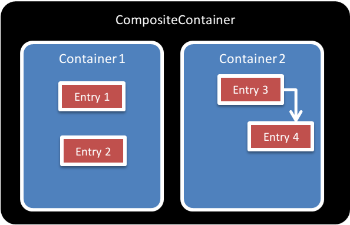
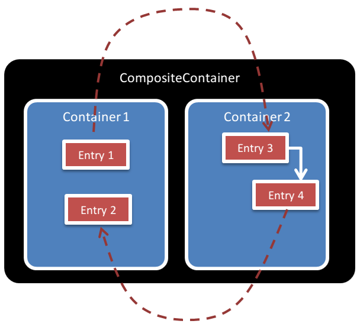
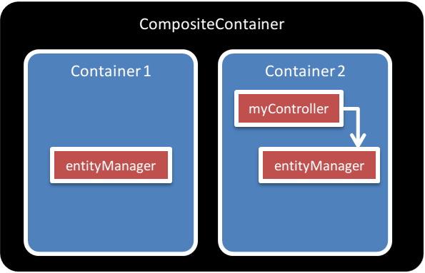

This document describes the delegate lookup feature.
Containers are not required to implement this feature to respect the ContainerInterface.
However, containers implementing this feature will offer a greater lever of interoperability
with other containers, allowing multiple containers to share entries in the same application.
Implementation of this feature is therefore recommanded.
The ContainerInterface (meta doc)
standardizes how frameworks and libraries make use of a container to obtain objects and parameters.
By standardizing such a behavior, frameworks and libraries relying on the ContainerInterface
could work with any compatible container.
That would allow end users to choose their own container based on their own preferences.
The ContainerInterface is also enough if we want to have several containers side-by-side in the same
application. For instance, this is what the CompositeContainer
class of Acclimate is designed for:

However, an instance in container 1 cannot reference an instance in container 2.
It would be better if an instance of container 1 could reference an instance in container 2, and the opposite should be true.

In the sample above, entry 1 in container 1 is referencing entry 3 in container 2.
The goal of the delegate lookup feature is to allow several containers to share entries.
Containers implementing this feature can perform dependency lookups in other containers.
A container implementing this feature:
ContainerInterfaceContainerInterface.When a delegate container is configured on a container:
get method should only return an entry if the entry is part of the container.
If the entry is not part of the container, an exception should be thrown (as required in the ContainerInterface).has method should only return true if the entry is part of the container.
If the entry is not part of the container, false should be returned.Important! By default, the lookup should be performed on the delegate container only, not on the container itself.
It is however allowed for containers to provide exception cases for special entries, and a way to lookup into the same container (or another container) instead of the delegate container.
The delegate container will usually be a composite container. A composite container is a container that contains several other containers. When performing a lookup on a composite container, the inner containers are queried until one container returns an entry. An inner container implementing the delegate lookup feature will return entries it contains, but if these entries have dependencies, the dependencies lookup calls will be performed on the composite container, giving a chance to all containers to answer.
Interestingly enough, the order in which containers are added in the composite container matters. Indeed, the first containers to be added in the composite container can "override" the entries of containers with lower priority.

In the example above, "container 2" contains a controller "myController" and the controller is referencing an "entityManager" entry. "Container 1" contains also an entry named "entityManager". Without the delegate lookup feature, when requesting the "myController" instance to container 2, it would take in charge the instanciation of both entries.
However, using the delegate lookup feature, here is what happens when we ask the composite controller for the "myController" instance:
get call on container 2 for the "myController" instance.get call on container 1 for the "entityManager" instance.In the end, we get a controller instanciated by container 2 that references an entityManager instanciated by container 1.
The first proposed approach we tried was to perform all the lookups in the "local" container, and if a lookup fails in the container, to use the delegate container. In this scenario, the delegate container is used in "fallback" mode.
This strategy has been described in @moufmouf blog post: http://mouf-php.com/container-interop-whats-next (solution 1). It was also discussed here and here.
Problems with this strategy:
The first proposed approach was to develop a ParentAwareContainerInterface interface.
It was proposed here: https://github.com/container-interop/container-interop/pull/8
The interface would have had the behaviour of the delegate lookup feature but would have forced the addition of
a setParentContainter method:
interface ParentAwareContainerInterface extends ReadableContainerInterface {
/**
* Sets the parent container associated to that container. This container will call
* the parent container to fetch dependencies.
*
* @param ContainerInterface $container
*/
public function setParentContainer(ContainerInterface $container);
}
The interface idea was first questioned by @Ocramius here. @Ocramius expressed the idea that an interface should not contain setters, otherwise, it is forcing implementation details on the class implementing the interface. Then @mnapoli made a proposal for a "convention" here, this idea was further discussed until all participants in the discussion agreed to remove the interface idea and replace it with a "standard" feature.
Pros:
If we had had an interface, we could have delegated the registration of the delegate/composite container to the the delegate/composite container itself. For instance:
$containerA = new ContainerA();
$containerB = new ContainerB();
$compositeContainer = new CompositeContainer([$containerA, $containerB]);
// The call to 'setParentContainer' is delegated to the CompositeContainer
// It is not the responsibility of the user anymore.
class CompositeContainer {
...
public function __construct($containers) {
foreach ($containers as $container) {
if ($container instanceof ParentAwareContainerInterface) {
$container->setParentContainer($this);
}
}
...
}
}
Cons:
Cons have been extensively discussed here. Basically, forcing a setter into an interface is a bad idea. Setters are similar to constructor arguments, and it's a bad idea to standardize a constructor: how the delegate container is configured into a container is an implementation detail. This outweights the benefits of the interface.
Originally, the proposed wording for delegate lookup calls was:
Important! The lookup MUST be performed on the delegate container only, not on the container itself.
This was later replaced by:
Important! By default, the lookup SHOULD be performed on the delegate container only, not on the container itself.
It is however allowed for containers to provide exception cases for special entries, and a way to lookup into the same container (or another container) instead of the delegate container.
Exception cases have been allowed to avoid breaking dependencies with some services that must be provided by the container (on @njasm proposal). This was proposed here: https://github.com/container-interop/container-interop/pull/20#issuecomment-56597235
In real-life scenarios, we usually have a big framework (Symfony 2, Zend Framework 2, etc...) and we want to add another DI container to this container. Most of the time, the "big" framework will be responsible for creating the controller's instances, using it's own DI container. Until container-interop is fully adopted, the "big" framework will not be aware of the existence of a composite container that it should use instead of its own container.
For this real-life use cases, @mnapoli and @moufmouf proposed to extend the "big" framework's DI container to make it act as a composite container.
This has been discussed here and here.
This was implemented in Symfony 2 using:
This was implemented in Silex using:
Having a container act as the composite container is not part of the delegate lookup standard because it is simply a temporary design pattern used to make existing frameworks that do not support yet ContainerInterop play nice with other DI containers.
The following projects already implement the delegate lookup feature:
setDelegateLookupContainer method$wrapperContainer parameter of the constructorpimple-interop, through the $container parameter of the constructor
People
Are listed here all people that contributed in the discussions, by alphabetical order:
Relevant Links
Note: Order descending chronologically.